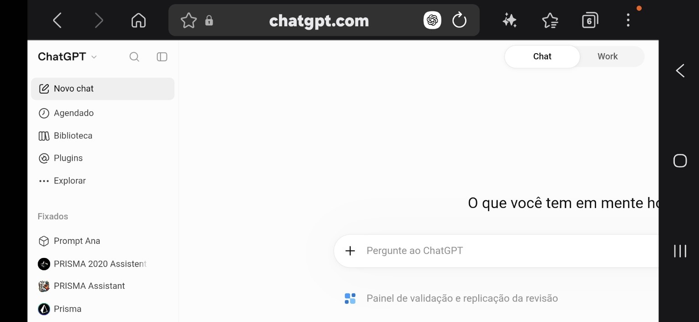
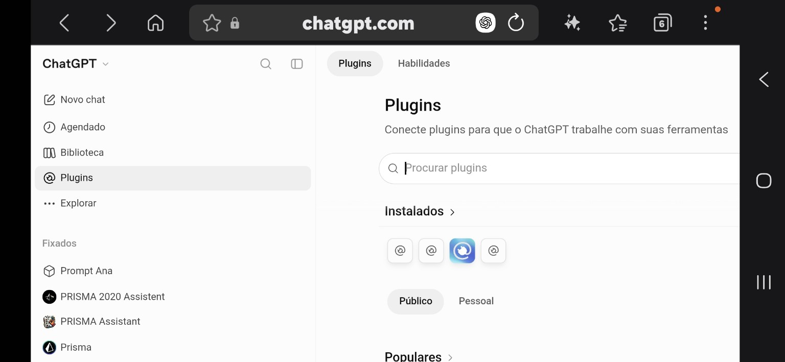
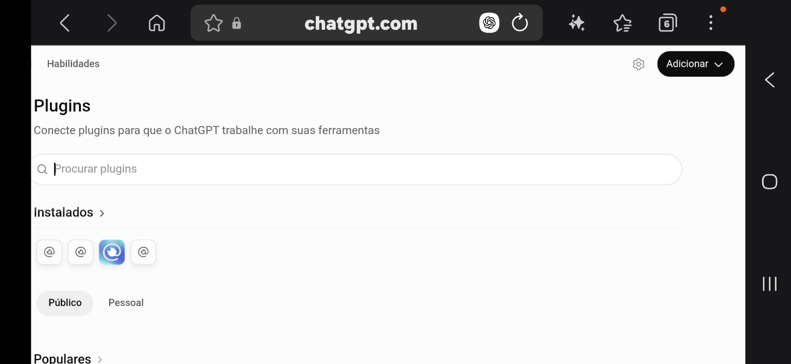
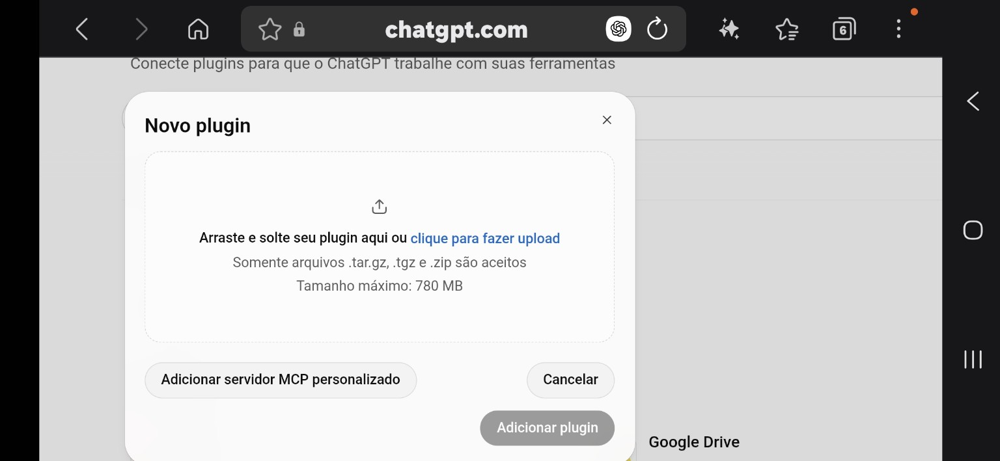
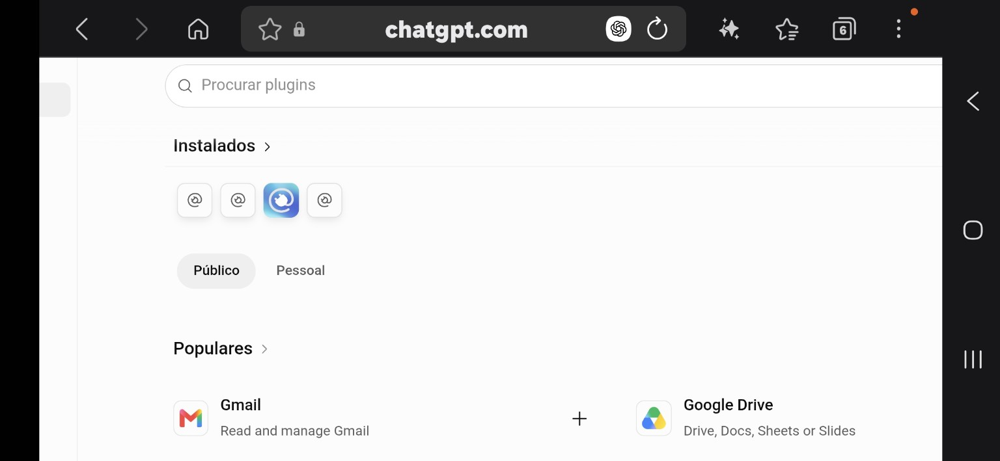
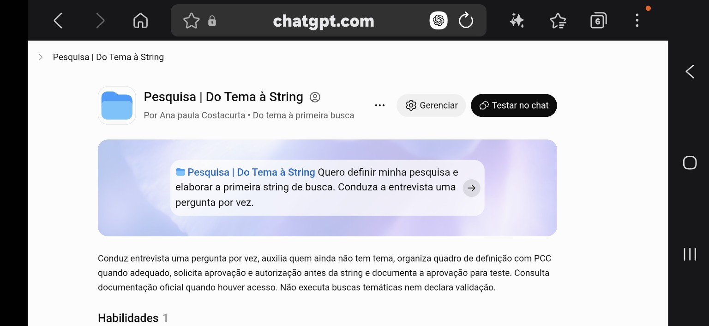
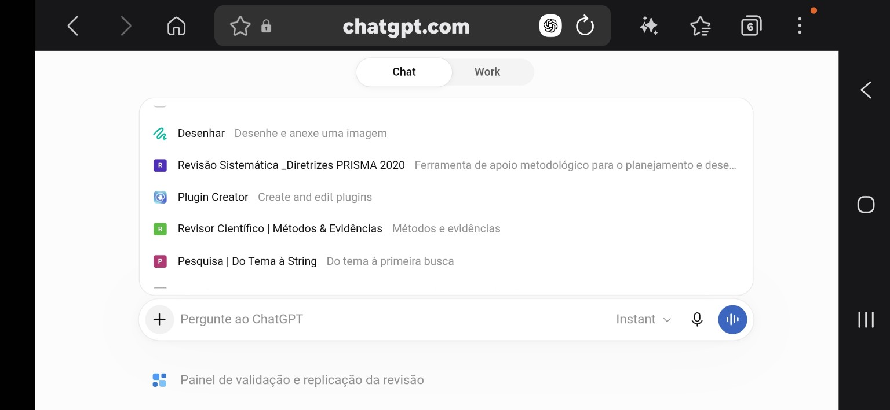

Uma ideia mais clara
Tema, recorte, pergunta, objetivos e critérios reunidos em um quadro para sua avaliação.
UM GUIA PARA QUEM ESTÁ COMEÇANDO
Transforme uma ideia em um tema delimitado e em uma primeira busca científica. Uma conversa de cada vez, com você no controle das decisões.
Não precisa ter um tema pronto. “Ainda não sei” também é um começo.
PRIMEIRO, O BÁSICO
Um plugin é um conjunto de orientações que ajuda o ChatGPT a seguir um processo. Este foi criado para acompanhar os primeiros passos de uma pesquisa.
Uma string de busca é uma combinação de palavras e operadores, como AND e OR, usada para procurar publicações em bases científicas. O plugin ajuda a propor essa combinação — você avalia e aprova as escolhas.
Tema, recorte, pergunta, objetivos e critérios reunidos em um quadro para sua avaliação.
Termos e combinações adaptados à base escolhida, com justificativas e limitações.
Decisões, versões e papéis humanos e da IA. O DOCX depende dos recursos disponíveis na conversa.
SEU PONTO DE PARTIDA
O arquivo contém o roteiro do plugin. Ele será utilizado no ChatGPT, não nesta página.
Guarde o ZIP sem descompactar para enviá-lo na área de plugins, quando essa opção estiver disponível.
Baixar plugin (.zip) Abrir o ChatGPT em outra aba →PASSO A PASSO
Use o ChatGPT na web. As opções podem variar conforme a conta e as permissões do seu espaço de trabalho.
Use o botão acima e localize pesquisa-primeira-string-v1.0.0.zip na pasta Downloads. Não envie o ZIP deste site: o arquivo do plugin é o que está dentro da pasta downloads.
Entre no ChatGPT e abra Plugins no menu lateral. Na interface dos prints abaixo, procure Adicionar, no canto superior direito, e a opção de upload. Na janela Novo plugin, selecione o ZIP do plugin e conclua a instalação quando o botão Adicionar plugin estiver habilitado. Acompanhe pelas telas abaixo.
Não encontrou a opção? Isso pode ser uma limitação da conta ou das permissões. Consulte o administrador e o guia oficial abaixo. Anexar um ZIP a uma conversa comum não equivale a instalar o plugin.
Depois da instalação, inicie uma nova conversa. Procure Pesquisa | Do Tema à String nos plugins disponíveis. Use a seleção ou a menção com @, quando oferecida na sua interface.
Copie o texto abaixo, cole na conversa com o plugin selecionado e envie. Depois, responda às perguntas com suas próprias palavras.
Quero definir minha pesquisa e elaborar a primeira string de busca. Conduza a entrevista uma pergunta por vez e me ajude se eu responder “não sei”.
ACOMPANHE PELAS TELAS
Siga as telas em ordem, da instalação ao início da entrevista. Toque ou clique em uma imagem para abrir a versão ampliada em outra aba.
Capturas fornecidas pela autora em 12/11/2026. A aparência e as opções podem variar conforme a conta e as permissões. As telas incluem a conta da criadora; alguns controles são exclusivos dela.
No menu lateral do ChatGPT, selecione Plugins.

Nesta página ficam os plugins instalados e as opções Público e Pessoal.

Na parte superior direita, abra Adicionar e procure a opção de enviar um plugin.

Na janela Novo plugin, clique em clique para fazer upload e selecione pesquisa-primeira-string-v1.0.0.zip. Aguarde o carregamento e conclua em Adicionar plugin quando o botão estiver habilitado.

Volte à área de plugins e consulte Instalados ou Pessoal para localizar o plugin. Esta tela mostra a área de navegação; ela não exibe o nome do plugin Pesquisa.

Confira o nome Pesquisa | Do Tema à String. Se a sua interface apresentar Testar no chat, use esse botão para iniciar a conversa. O botão Gerenciar é exibido na conta da criadora e pode não aparecer em outras contas.

Em um novo chat, abra a seleção de plugins, por exemplo digitando @ quando disponível. Escolha Pesquisa | Do Tema à String e envie a mensagem inicial indicada acima.

Os nomes e as marcas exibidos pertencem aos respectivos titulares. Os prints documentam a interface e seguem os termos aplicáveis a conteúdos de terceiros.
DURANTE A CONVERSA
O assistente faz perguntas. Se faltar clareza, ele ajuda a encontrar um recorte.
Leia a definição da pesquisa. Peça ajustes ou aprove e autorize a elaboração da string.
Confira os termos e as justificativas. A aprovação é para teste, não uma validação científica.
Solicite o documento ao final. Teste a busca na base e registre os resultados em uma etapa posterior.
O plugin não executa a busca de estudos, não garante resultados e não substitui a avaliação metodológica humana. A consulta a fontes e a geração de arquivos dependem das ferramentas disponíveis no ChatGPT.
SEM COMPLICAÇÃO
Sim. Conte sua área de interesse ou uma situação que desperta sua curiosidade. O roteiro prevê perguntas de apoio para construir o tema e seus limites.
Território é o campo mais amplo; nicho é a lacuna ou questão a investigar; ocupação do nicho é a contribuição pretendida. O nicho depende de fundamentação bibliográfica. PCC significa População, Conceito e Contexto e só deve ser usado quando adequado ao desenho da pesquisa.
Não para usar este plugin no ChatGPT. Você precisa de acesso aos recursos de plugins da sua conta. Este site não solicita chaves, senhas nem respostas da entrevista.
Verifique se a opção de upload está disponível e se você tem permissão. Em conta institucional, procure o administrador. A disponibilidade varia; baixar o arquivo não garante acesso. Consulte o guia oficial. O link privado da criadora não concede automaticamente acesso a outras pessoas.
Não. Ele registra o desenvolvimento e as aprovações recebidas. Testes na plataforma, calibração e eventual revisão independente são procedimentos separados e devem ser documentados quando realizados.
A entrevista acontece no ChatGPT e segue as configurações e os termos desse serviço. Esta página não tem formulário de entrevista, rastreadores nem envio de respostas. Os campos de citação abaixo são processados apenas no seu navegador.
TRANSPARÊNCIA NA PESQUISA
Citar a página e relatar o uso da IA são ações complementares. Use a referência da página para o guia; descreva no método como o plugin e o ChatGPT participaram do trabalho.
O endereço oficial da página é fixo e não pode ser editado neste formulário. Ajuste apenas a data de acesso antes de copiar a referência. Guia atualizado em 12/11/2026.
No texto: Costacurta (2026) ou (Costacurta, 2026).
No texto: Costacurta (2026) ou (Costacurta, 2026). A referência usa a data específica de criação desta versão; não inclui data de acesso por tratar esta versão como estável.
Modelos para esta página, com autoria individual e data explícita. Na APA, aplique itálico ao título do guia. Se o conteúdo for atualizado, revise os metadados; para conteúdos mutáveis sem versão arquivada, a APA pode exigir data de recuperação. Confira as exigências do periódico.
Adapte o modelo abaixo ao que realmente ocorreu. Não atribua testes, revisão independente ou aprovações que não tenham acontecido.
A elaboração inicial da estratégia de busca contou com apoio do plugin Pesquisa | Do Tema à String (versão [VERSÃO DO PLUGIN]), de Ana Paula Costacurta, utilizado no ChatGPT, da OpenAI, com o modelo [IDENTIFICAÇÃO VERIFICADA OU NÃO INFORMADA], em [DATA], às [HORÁRIO E FUSO]. A IA auxiliou em [ATIVIDADES EFETIVAMENTE REALIZADAS]. O responsável humano realizou [DECISÕES E CONFERÊNCIAS EFETIVAS] e aprovou a versão [IDENTIFICADOR] para teste. Essa aprovação não foi tratada como validação da estratégia. O guia de utilização foi consultado em [URL DO SITE].
Orientações conferidas em 12/11/2026. O texto integral das normas ABNT não foi reproduzido; utilize o acesso institucional para conferência normativa.
CONHECIMENTO PARA COMPARTILHAR
Você pode copiar, reproduzir, distribuir, replicar e modificar os conteúdos autorais deste site, seu código e o roteiro do plugin para fins não comerciais.
Venda e exploração comercial exigem autorização específica. Marcas, serviços e conteúdos de terceiros seguem seus próprios termos; esta autorização não altera as regras da OpenAI.
Ler autorização completa →